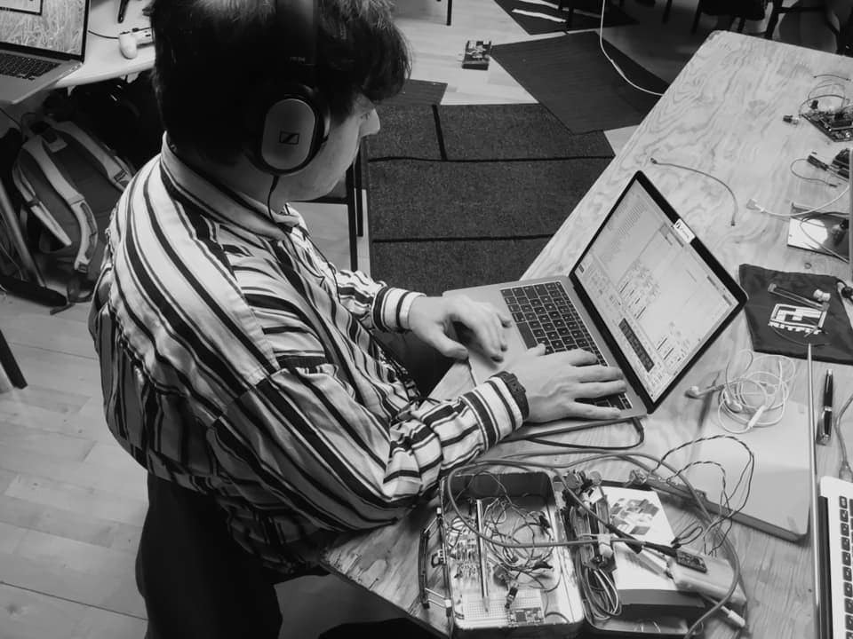

---
Flock is a Max for Live MIDI-effect patch.
It generates notes randomly with a MIDI note range of 25-90.
You can then control the rate that the notes are triggered
by toggling through the three options, explained below.
random - generates notes at a random rate
beat - select a quantised rate relative to your bpm
[1n, 2n, 4n, 8n, 16n, 32n]
beat/random - move between a quantised and random rate
using a slider to determine probability
Finally, there is a slider to control the velocity of the notes.
---
---
made by gary-martin during the CoDI hack @ Ty Cerdd.
